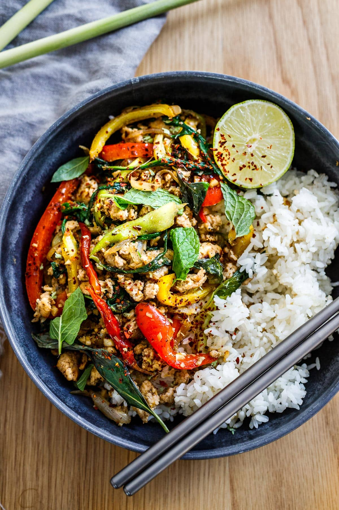

Lemon Grass Chicken

Description
Merging Eastern spices with European finesse, this recipe opens up new dimensions to your palate.
Ingredients
For 1 person:
- 1–2 tablespoons oil – peanut, coconut or wok oil
- 2 fat shallows, thinly sliced
- 6 garlic gloves, roughly chopped
- 1/4 cup lemongrass, finely chopped
- 4–5 dried thai chilies (or dried arbol chilies) or 1/2 teaspoon of
- 1 lb ground chicken
- 1/2 teaspoon salt
- 1 teaspoon Chinese 5-Spice
- 1 teaspoon cracked pepper
- 1 bell red or yellow bell pepper (or sub other quick cooking veggie)
- 2 baby bok choy, about 2 cups, sliced (or sub other quick cooking green or veggie)
- 3 tablespoons fish sauce
- 2 tablespoons lime juice
- 1 tablespoon honey
- 1/4 cup mint leaves or thai basil
- lime wedges
- 1 cup of jasmin rice
Steps:
- Set rice to cook if using.
- In an extra-large skillet, heat oil over medium-heat heat. Once hot, add shallots, stir fry until tender, about 2-3 minutes. Add garlic, lemongrass and dried chilies, stir-frying until fragrant. Scoop this all into a bowl and set aside.
- In the same pan add a splash of oil, increase heat to high, add ground chicken and season with salt and pepper, breaking it apart with a spatula and browning just a bit. Add five spice, bell peppers and bok chok, lower heat, and stir fry until bell peppers are just tender, about 3 minutes.
- Add fish sauce, lime juice and honey mixture, along with cooked shallots/garlic/ lemongrass ( removing the thai chilies).
- Taste and adjust flavors- to taste.
- Add fresh herbs and serve!